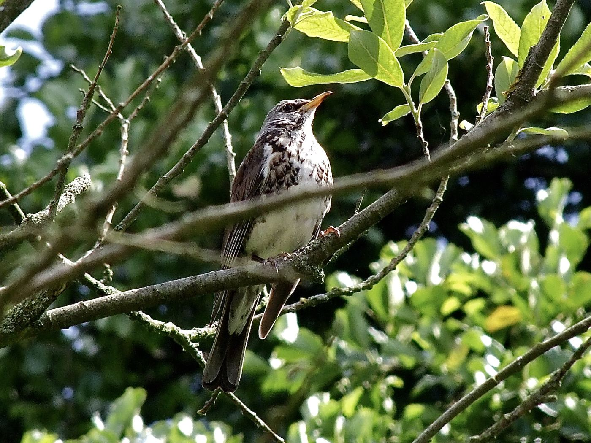

Wirbeltiere › Vögel › Sperlingsvögel › Drosseln
Turdus pilaris

Was du siehst: Eine Wacholderdrossel im Geäst: grauer Kopf, gefleckte Brust und kräftig gelber Schnabel.
Foto: Michael Baur · CC BY-NC
„Krammet“ ist ein altes Wort für Wacholder. Im Winter fressen die Drosseln gern dessen Beeren – daher der Name. Früher wurden sie als „Krammetsvögel“ in großen Mengen gefangen und gegessen.
Wacholderdrosseln brüten gern nah beieinander. Nähert sich eine Krähe oder ein Greifvogel, stürzen sich mehrere Altvögel laut schimpfend auf ihn – und bespritzen ihn gezielt mit Kot. Das verklebt das Gefieder des Angreifers und vertreibt ihn.
Im Winter fallen Trupps aus dem Norden ein, oft zusammen mit Rotdrosseln. Sie suchen Fallobst unter alten Apfelbäumen und plündern Beerensträucher.
Foto Michael Baur, CC BY-NC · Texte Fauna Mibaso. Die Artseite ist Endpunkt im Stammbaum und Nachschlagewerk zum Vogelpass auf bio.mibaso.de.